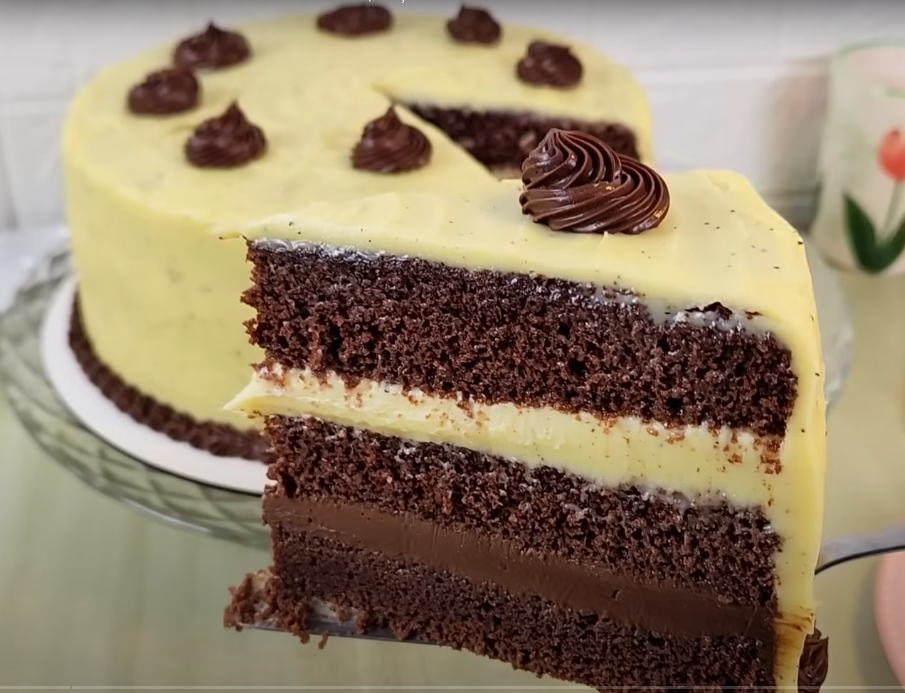

Página 3 - Receita de Bolo com Listas
Bolo Trufado de Chocolate e Maracujá

Ingredientes
Massa
- 95g ou 1 xícara (chá) de Chocolate em Pó Mix 50% Cacau
- 160ml ou 2/3 de xícara (chá) de água quente
- 360g ou 3 xícaras (chá) de farinha de trigo
- 1 colher (chá) de bicarbonato de sódio
- 1 colher (chá) de fermento em pó Mix
- 1 colher (chá) de sal
- 240g ou 1 xícara (chá) + 1 colher (sopa) de manteiga sem sal
- 360g ou 2 xícaras (chá) de açúcar refinado
- 2 colheres (chá) de Emulsificante para confeitaria Mix
- 4 ovos
- 240ml ou 1 xícara (chá) de iogurte natural
- 30ml ou 2 colheres (sopa) de aroma hidroalcoólico de baunilha
Brigadeiro Trufado
-
200g ou 1 xícara (chá) de Chocolate Selecta Namur Ao Leite picado
- 395g ou 1 lata de leite condensado
- 10g ou 1 colher (sopa) de manteiga sem sal
- 200g ou 1 caixinha de creme de leite UHT
Ganache de Maracujá
-
300g ou 1 e ½ xícaras (chá) de Chocolate Selecta Namur Branco picado
- 120g ou ½ xícara (chá) de creme de leite UHT
- 100g de Variegato Specialitá Maracujá
Modo de Preparo
Massa
-
Pré-aqueça o forno à 180ºC. Reserve uma forma redonda de 22cm de
diâmetro por 6cm de altura com o fundo forrado com papel manteiga.
- Misture a água e o Chocolate em Pó Mix 50% Cacau. Reserve.
- Peneire a farinha, o sal, o bicarbonato e o fermento.
-
Bata o açúcar, a manteiga e o emulsificante até formar um creme.
- Acrescente os ovos um a um, misture até ficar bem cremoso.
-
Adicione o aroma de baunilha e o chocolate em pó diluído e misture
até homogeneizar.
-
Com o auxílio de uma espátula ou batedor manual, acrescente
alternadamente a farinha e o iogurte em duas vezes.
- Despeje a massa na forma.
-
Asse por 30 a 40 minutos ou até espetar o palito e sair limpo.
Brigadeiro Trufado
-
Em uma panela, misture o leite condensado, o Chocolate Selecta Namur
Ao Leite picado e a manteiga.
- Cozinhe em fogo médio até o creme soltar da panela.
- Retire do fogo, adicione o creme de leite e misture bem.
Ganache de Maracujá
-
Em uma panela, misture o creme de leite e o Variegato Specialitá
Maracujá. Cozinhe em fogo médio até iniciar fervura.
- Retire do fogo e adicione o chocolate branco picado.
- Misture até o completo derretimento do chocolate.
Montagem
- Fatie a massa do bolo já fria em três partes iguais.
-
Coloque uma das fatias sobre um prato e espalhe 2/3 do Brigadeiro
Trufado. Cubra com outra fatia e espalhe a Ganache de Maracujá.
Finalize com a última fatia e cubra com o Brigadeiro Trufado
restante.
- Decore a gosto e sirva!